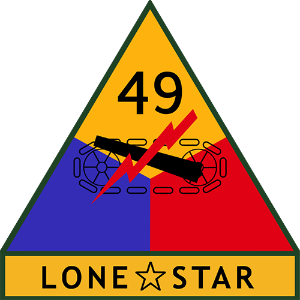
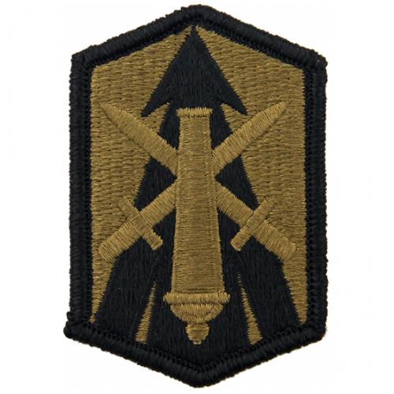
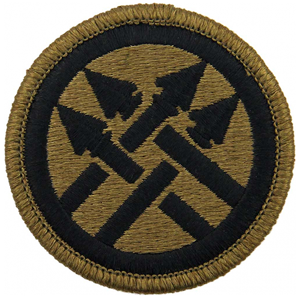

SSI from Decommissioned US Army Units

2nd Armored Division
Wikipedia Article3rd Armored Divsiion
Wikipedia Article
3rd Signal Brigade
Wikipedia Article
5th Infantry Division
Wikipedia Article
5th Signal Command
Wikipedia Article6th Armored Division
Wikipedia Article6th Cavalry Brigade

8th Infantry Division
Wikipedia Article
9th Infantry Division
Wikipedia Article10th Armored Division
Wikipedia Article
11th Armored Division
Wikipedia Article21st Cavalry Division
Wikipedia Article
22nd Signal Brigade
Wikipedia Article23rd Infantry Division
Wikipedia Article24th Infantry Division
Wikipedia Article26th Infantry Division
Wikipedia Article27th Infantry Division
Wikipedia Article
30th Armored Division
Wikipedia Article31st Infantry Division
Wikipedia Article32nd Infantry Division
Wikipedia Article39th Infantry Division
Wikipedia Article45th Infantry Division
Wikipedia Article47th Infantry Division
Wikipedia Article

49th Armored Division
Wikipedia Article50th Armored Division
Wikipedia Article70th Infantry Division
Wikipedia Article87th Infantry Division
Wikipedia Article88th Infantry Division
Wikipedia Article89th Infantry Division
Wikipedia Article92nd Infantry Division
Wikipedia Article97th Infantry Division
Wikipedia Article99th Infantry Division
Wikipedia Article172nd Infantry Brigade
Wikipedia Article

214th Fires Brigade
Wikipedia Article
